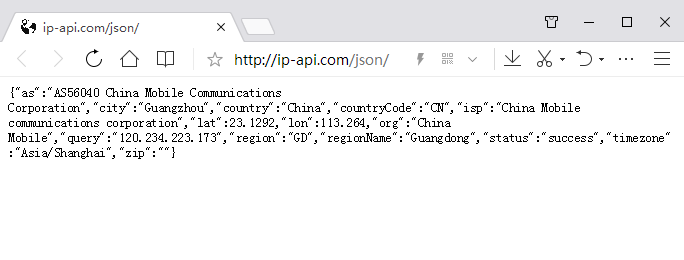

10.6. 解析JSON¶
JSON(JavaScript Object Notation, JS 对象简谱) 是一种轻量级的数据交换格式。采用完全独立于编程语言的文本格式来存储和表示数据，易于人阅读和编写，同时也易于机器解析和生成，所以在互联网应用非常广泛。
在python中，json和dict非常类似，都是key-value的形式，而且json、dict也可以非常方便的通过 json 模块互转。
- json：是一种数据格式，是纯字符串，本质是一种文件组织方式，比如您熟悉的txt、csv、doc、docx、xls、xlsx文件等。
- dict：是一种数据结构，比如列表list、集合set、字符串str、数组array。
10.6.1. 网络获取解析JSON¶
http协议采用的是请求/响应模型，浏览器或客户端发出请求，服务器给与响应。
例如，想从 http://ip-api.com/json/ 这个开放的接口中获取IP地址等信息，我们将地址直接在浏览器输入，可以看到：
{kind=link}
这是一个json数组，包含有IP地址等信息。我们通过访问这个url，获取到这些信息然后返回字符串text，通过ujson.loads(str)把字符串给生成dict字典类型，就可以直接读关键字（key）获取对应的值（value）。
将网站中的部分信息显示在OLED显示屏上¶
1 2 3 4 5 6 7 8 9 10 11 12 13 14 15 16 17 18 19 20 21 22 23 | from mpython import*
import json
import urequests # urequests模块是一个用于网络访问的模块
mywifi=wifi()
mywifi.connectWiFi('yourESSID', 'yourpassword') #连接 WiFi 网络
url_ip ="http://ip-api.com/json/" #添加请求地址
rsp=urequests.get(url_ip) #发送get请求
ipJson=rsp.text
ipDict=json.loads(ipJson)
oled.DispChar('国家:%s' % ipDict['country'],0,5) #将国家信息显示到OLED显示屏上
oled.show()
oled.DispChar('城市:%s' % ipDict['city'],0,25) #将城市信息显示到OLED显示屏上
oled.show()
oled.DispChar('IP:%s' % ipDict['query'],0,45) #将IP地址信息显示到OLED显示屏上
oled.show()
|
{kind=link}
我们在REPL交互式的编程环境下逐步解析，能更加直观地查看结果。
使用前，导入mpython、json、urequests模块:
>>> from mpython import*
>>> import json
>>> import urequests
连接您的 WiFi 网络，需要设置您的WiFi名称和密码:
>>> mywifi=wifi()
>>> mywifi.connectWiFi('yourESSID', 'yourpassword')
Connecting to network...
Connecting to network...
Connecting to network...
WiFi Connection Successful,Network Config:('','','','')
添加请求地址，发送get请求，获取网页第三方接口返回的数据:
>>> url_ip ="http://ip-api.com/json/"
>>> rsp=urequests.get(url_ip)
获取的数据返回为json数据文本格式，打印输出，我们可以看到返回的数据:
>>> ipJson=rsp.text
>>> print(jpJson)
{"as":"AS56040 China Mobile Communications Corporation","city":"Guangzhou","country":"China","countryCode":"CN","isp":"China Mobile communications corporation","lat":23.1292,"lon":113.264,"org":"China Mobile","query":"120.234.223.173","region":"GD","regionName":"Guangdong","status":"success","timezone":"Asia/Shanghai","zip":""}
注解
rsp.text 返回为json数据文本格式。
将获取的数据转换为dict字典类型，打印输出，我们可以看到返回的数据:
>>> ipDict=json.loads(ipJson)
>>> print(ipDict)
{'countryCode': 'CN', 'lon': 113.264, 'regionName': 'Guangdong', 'query': '120.234.223.173', 'city': 'Guangzhou', 'status': 'success', 'org': 'China Mobile', 'timezone': 'Asia/Shanghai', 'region': 'GD', 'lat': 23.1292, 'isp': 'China Mobile communications corporation', 'as': 'AS56040 China Mobile Communications Corporation', 'zip': '', 'country': 'China'}
注解
json.loads(str) 解析 JSON 字符串并返回对象。
我们可以在dict字典中键入关键字（key），获取对应的信息值（value），比如城市、IP地址:
>>> ipDict['city']
'Guangzhou'
>>> ipDict['query']
'120.234.223.173'